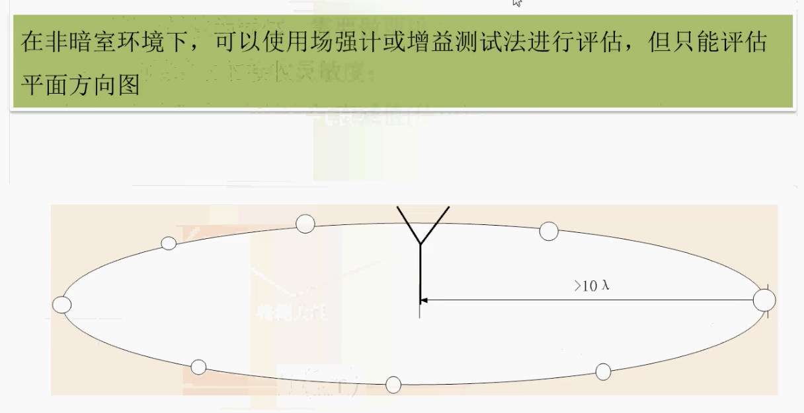

概述
通常条件下，微波暗室很难配备，如何在没有微波暗室情况下测量天线的特性参数非常重要。
电路特性参数测试
电路特性参数主要包括：电压驻波比(VSWR)、回波损耗($S_{11}$)、隔离度、三阶交调等。
通常测试时，工业上要求：
- VSWR < 2
- $S_{11}$ < -10 dB
- 隔离度 < -20 dB
注：隔离度针对多端口，例如MIMO天线，两个馈点。将两个馈点同时接到网络分析仪，测量的$S_{12}$和$S_{21}$即为隔离度。
ADS与网络分析仪联调
通常，使用网络分析仪测量回波损耗($S_{11}$)，导出为.snp文件，并导入ADS进行匹配电路设计。
辐射特性参数测试
如图，$\lambda/2$波长内为近场，$10\lambda$波长外为远场，要测试天线的辐射特性参数，例如增益、方向图，必须放到远场测试。
上图显示了微波暗室的结构，微波暗室自动化程度非常高。微波暗室可测试的参数包括：
- 增益
- 半功率波束宽度 (3dB波束)
- 前后比
- 交叉极化比
- 方向图
无微波暗室时的测试评估
增益测试一
如图所示，两个被测天线，其中一个个可接信号发生器（或者射频模块）。例如，被测天线为 443 MHz 天线，发射端可接一个LoRa或者Si4463模块，把发射功率配置为 15 dBm，默认天线效率为 100% ，在接收端频谱分析仪上课测得接收功率，假设此时接收功率测得 -70 dBm，则发射到接收过程总损失为 LOS = 85 dBm。公式中，发射增益与接收增益相等，$G_T=G_R$。通过公式可以粗略算出天线增益。假设测试传输距离$D=1~\mathrm{km}$。
$$LOS-LOS_{air}=32.44+20\log_{10}{D_{km}}+20\log_{10}{f_{MHz}}-G_T-G_R$$
$$85-35=32.44+20\lg{1}+20\lg{433}-2G_T$$
$$G_T\approx G_R\approx 35.14~\mathrm{dB}$$
测试时需要校准$LOS_{air}$的值，用标准天线（增益已知），假设天线增益为 2 dBi，此时发射功率为15 dBm，接收功率为 -60 dBm，则公式为：
$$75-LOS_{air}=32.44+20\lg{1}+20\lg{433}-2*2$$
可得到$LOS_{air}$的值，在相同的环境下，$LOS_{air}$的值不会改变，以这个值作为参考，可以获得较为理想的天线增益。
总体来说，这个公式对天线增益的处理有限，只能作为一个评估值，根据天线性能需求，对设计天线有指导意义。
增益测试二
方法二是弗里斯传输共识（Friis transmission equation）的应用，测试结构拓扑与方法一相同。注意：功率所使用的单位为 W(瓦特)，增益单位不是 dBi。这个方法实测较为准确。实例如下：
注：同轴线损耗也需要考虑，测试前须测量同轴线损耗。
对于多频天线，例如WIFI天线，信号发生器设置不同的频率，进行多次测量，就可以测得不同频率下天线的增益。
比较
- 方法一主要作为开发前的评估使用，方法二测试比较准确，更接近天线实际增益，作为设计天线后的测试指标。
- 方法一与方法二差距并不大，约 2 dB左右。
- 方法一使用频率进行计算，方法二使用波长进行计算，两者差距并不大。
接收灵敏度测试
模块接收灵敏度测试
上图为测试拓扑链路，其中信号发生器直接接到模块接收天线处。假设信号发生器，当输出功率为 -119 dBm 时模块还可以接收到信号，-120 dBm 时就接收不到信号，则可以说模块的接收灵敏度为 -120 dBm。同样，信号发生器也可以使用发射模块代替。
天线接收灵敏度测试

上图为天线接收灵敏度测试方法。若测量天线时，接收模块已经达到接收灵敏度极限值，则可以说天线接收灵敏度大于接收模块接收灵敏度,若要进一步测试，则需要换更精密设备，如示波器或者频谱分析仪。通过频谱分析仪，可以看到信号的波动。
例如：信号发生器发射功率为 -110 dBm，信道衰减为 30 dBm，此时接收天线完全接收不到信号，接收天线此时的接收功率为 -140 dBm。
天线方向图测试
场强计测试法

增益测试法
实例分析
假设有一个Zigbee模块，设计一个蓝牙天线，发射功率为 5 dBm，中心频率为 2.45 GHz，要求可以传输 80 m，分析天线增益要求。假定接收模块为cc2540，接收灵敏度为 -100 dBm，假设空气损耗为 35 dB：
$$105~\mathrm{dBm}-35=32.4+20\lg{2450}+20\lg{0.08}-2G_T$$
$$G_T \approx -0.85~\mathrm{dBi}$$
考虑天线极化方式，如果是线极化，则天线增益损耗一半，则实际增益值应为：
$$G_T\approx -0.85+3\approx 2.15~\mathrm{dBi}$$
极化损失一般是针对圆极化与线极化来说，天线极化方式相同，则损耗较小。
假设标准天线增益为 2 dBi，发射功率为 5 dBm，芯片接收灵敏度为 -100 dBm，距离 80m，
$$105~\mathrm{dBm}-LOS_{air}=32.4+20\lg{2450}+20\lg{0.08}-2*2$$
$$LOS_{air}\approx 30.76~\mathrm{dB}$$